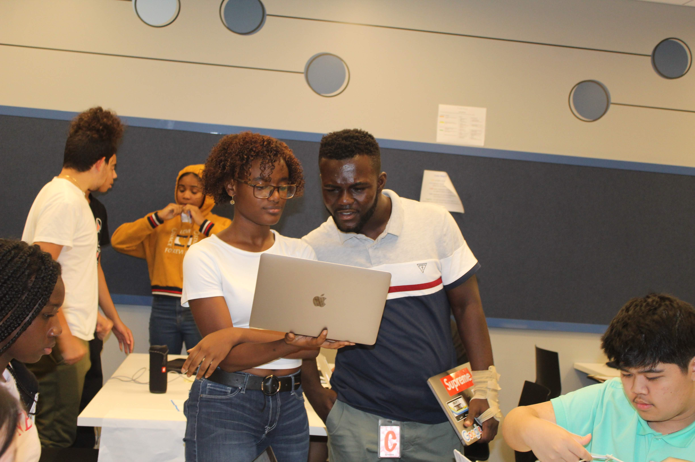
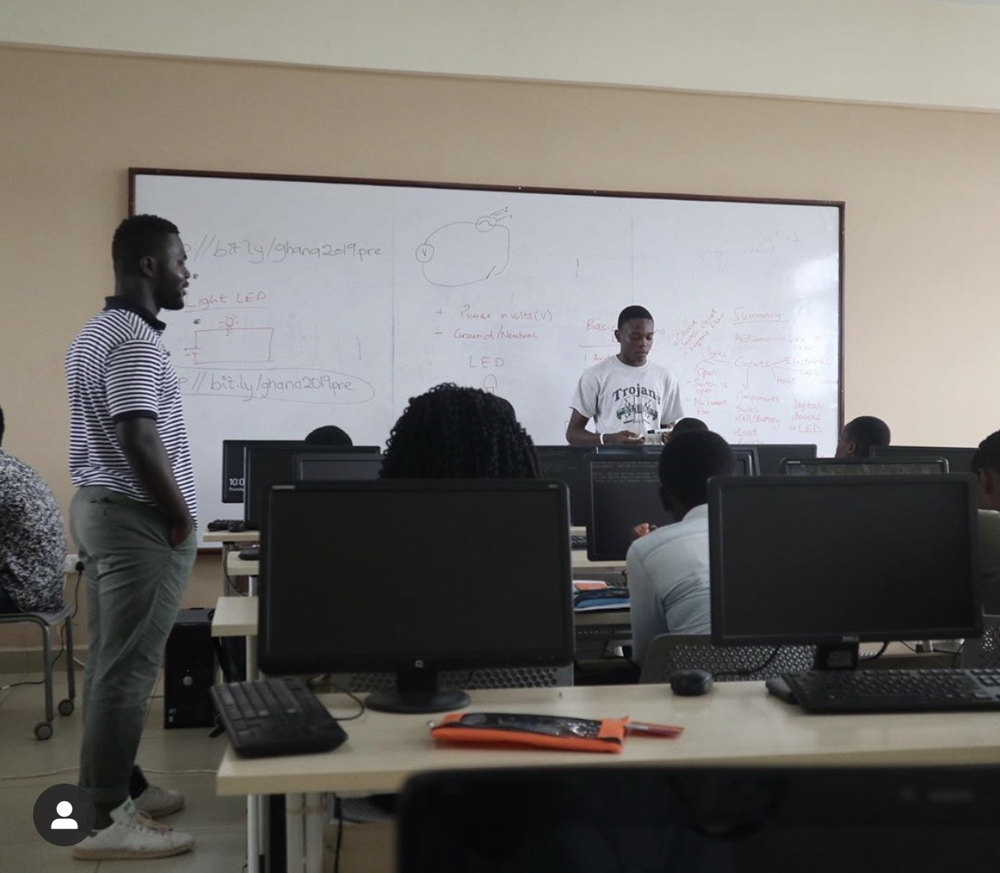

Michael Okrah
About me
My name is Michael Okrah, I was born in Ghana situated in West Africa. I am currently a Sophomore at University at Buffalo Studying Computer Engineering. I graduated from Highschool in NYC, the foundation of where my interest in STEM came to be born I'm really interested in biomedical technologies, financial technologies, IOT (Internet of things ), and automation research. Lately i've been really passionate about STEM education, especially in bridging the gap for minority students and students of color I've done various projects across different platforms of engieering,feel free to check them out here
Here are a Project last Summer in Ghana

Lecturing an arduino class with about 25 students. Creating lesson plans and helping students diagnose issues was a great experience